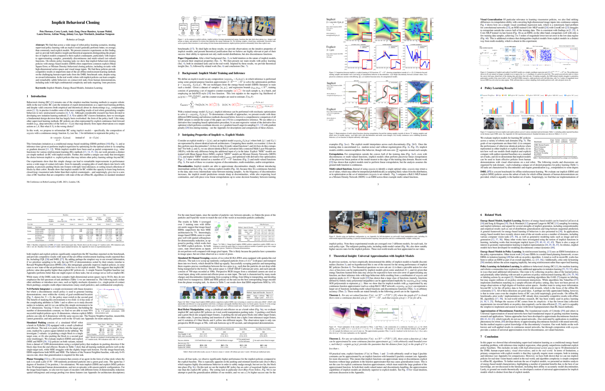

Conference on Robot Learning (CoRL) 2021
Abstract. We find that across a wide range of robot policy learning scenarios, treating supervised policy learning with an implicit model generally performs better, on average, than commonly used explicit models. We present extensive experiments on this finding, and we provide both intuitive insight and theoretical arguments distinguishing the properties of implicit models compared to their explicit counterparts, particularly with respect to approximating complex, potentially discontinuous and multi-valued (set-valued) functions. On robotic policy learning tasks we show that implicit behavioral cloning policies with energy-based models (EBM) often outperform common explicit (Mean Square Error, or Mixture Density) behavioral cloning policies, including on tasks with high-dimensional action spaces and visual image inputs. We find these policies provide competitive results or outperform state-of-the-art offline reinforcement learning methods on the challenging human-expert tasks from the D4RL benchmark suite, despite using no reward information. In the real world, robots with implicit policies can learn complex and remarkably subtle behaviors on contact-rich tasks from human demonstrations, including tasks with high combinatorial complexity and tasks requiring 1mm precision.
Implicit BC (ours)
Explicit BC (baseline)
Implicit BC (ours)
Explicit BC (baseline)
Paper
Latest version (Sep 1, 2021): arXiv:2109.00137 [cs.RO].
Published at the Conference on Robot Learning (CoRL) 2021

Code
Code is available! On Github.
Bibtex
title={Implicit Behavioral Cloning},
author={Florence, Pete and Lynch, Corey and Zeng, Andy and Ramirez, Oscar and Wahid, Ayzaan and Downs, Laura and Wong, Adrian and Lee, Johnny and Mordatch, Igor and Tompson, Jonathan},
journal={Conference on Robot Learning (CoRL)},
year={2021}
}
Team


Robotics at Google
Acknowledgements
Speical thanks to thank Vikas Sindhwani for project direction advice; Steve Xu, Robert Baruch, Arnab Bose for robot software infrastructure; Jake Varley, Alexa Greenberg for ML infrastructure; and Kamyar Ghasemipour, Jon Barron, Eric Jang, Stephen Tu, Sumeet Singh, Jean-Jacques Slotine, Anirudha Majumdar, Vincent Vanhoucke for helpful feedback and discussions.